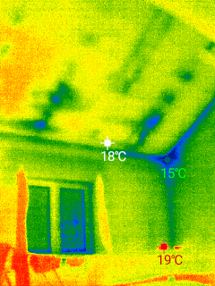

Diagnostika úniků tepla - Ondřejov, Senohraby, Mnichovice, Benešov, Říčany
Působnost: Jako řemeslník z Ondřejova nabízím služby diagnostiky úniků tepla v těchto lokalitách:
Ondřejov a okolí: Ondřejov, Turkovice, Hrusice
Praha-východ: Senohraby, Mnichovice, Říčany, Mirošovice, Strančice
Benešovsko: Benešov, Poříčí nad Sázavou, Chocerady
Jsem František Šubrt, řemeslník z Ondřejova, a mám dlouholeté osobní zkušenosti s diagnostikou a řešením problémů s úniky tepla. Tyto zkušenosti jsem získal prakticky, přímo ve svém domě v Ondřejově, kde jsem se tomuto problému mohl důkladně věnovat.
Díky této osobní praxi jsem našel levné a efektivní způsoby odstraňování tepelných mostů, které nyní nabízím i vám v Ondřejově a okolních obcích.
Osobní přístup k diagnostice úniků tepla
Můj přístup je založen na osobním porozumění specifickým potřebám každého zákazníka. Vím z vlastní zkušenosti, že každý dům v Ondřejově, Senohrabech, Mnichovicích nebo Benešově má své jedinečné vlastnosti a problémy.
Všechny služby provádím osobně, což mi umožňuje zajistit vysokou kvalitu a preciznost práce. Jako místní řemeslník z Ondřejova dobře znám specifika staveb v našem regionu.
Termokamera a moderní diagnostika v Ondřejově a okolí
Pro diagnostiku úniků tepla využívám moderní technologie včetně termokamery. Tato technologie mi umožňuje přesně identifikovat místa, kde dochází k únikům tepla - tzv. tepelné mosty.
Termokamera vizualualizuje teplotní rozdíly a odhaluje problémy, které pouhým okem neuvidíte. Na základě této diagnostiky pak navrhuji efektivní a levná řešení, jako jsou cílená těsnění nebo izolace konkrétních problémových míst.
Příklad detekce úniků tepla:

Levná řešení tepelných mostů - moje specializace
Díky svým dlouholetým osobním zkušenostem se specializuji na levná a účinná řešení tepelných mostů. Ne vždy je potřeba drahé celkové zateplení - často stačí cíleně řešit konkrétní problémová místa.
Nabízím lokalizovaná řešení jako jsou:
- Těsnění oken a dveří
- Izolace problémových míst ve zdech
- Odstranění tepelných mostů v rozích a napojeních
- Úpravy okolí oken a dveří
Komplexní posouzení situace
Čím složitější je situace, tím důležitější je důkladná analýza. Pokud Pokud jsou úniky tepla způsobeny kombinací několika faktorů (stará okna, nedostatečná izolace, problémy s ventilací), věnuji potřebný čas na nalezení optimálního řešení.
Mým cílem je vždy najít nejlepší možné řešení za rozumnou cenu, které zajistí maximální úsporu energie a zlepšení komfortu vašeho domova v Ondřejově nebo okolní obci.
Co NEnabízím - pro upřesnění
Pro transparentnost upřesňuji, že se nezabývám celkovým zateplením domu ani většími stavebními pracemi. Moje specializace je na diagnostiku a lokální řešení úniků tepla, nikoliv na kompletní rekonstrukce zateplení.
Jsem ideální volbou, pokud hledáte:
- Zjistit, kde vám uniká teplo
- Levné řešení konkrétních problémů
- Rady a doporučení na základě praktických zkušeností
- Řemeslníka z Ondřejova, který rozumí místním podmínkám
Potřebujete diagnostiku úniků tepla v Ondřejově nebo okolí?
Kontaktujte mě, Františka Šubrta, řemeslníka z Ondřejova:
Telefon: +420 604 590 261
Email: fandasubrt@seznam.cz
Lokality: Ondřejov, Senohraby, Mnichovice, Benešov, Říčany, Praha-východ a okolí
Nabízím osobní přístup, praktické zkušenosti a levná efektivní řešení tepelných mostů.